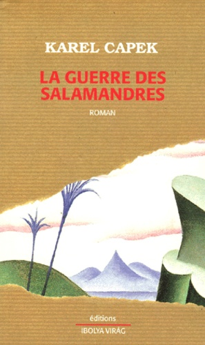
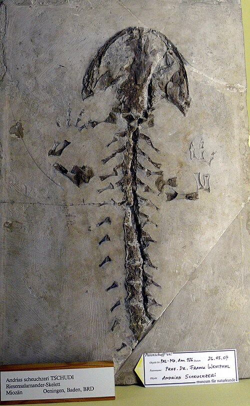

Karel Čapek a sorti La guerre des salamandres en 1936, deux ans avant que son pays - la Tchécoslovaquie - commence à être dépecé par son voisin nazi suite aux accords de Munich. L’auteur décrit dans ce livre la découverte de salamandres bipèdes sur une petite île du Pacifique, découverte qui entraîne leur multiplication rapide. Avec le temps, elles deviennent capables de parler, puis de construire des digues, puis des aménagements de plus en plus ambitieux, et tout ça sans rechigner à la tâche. Inévitablement, leur force de travail finit par être exploitée pour répondre aux intérêts d’une humanité avide, fascinée, et pas du tout préoccupée par les conséquences potentielles de ce qu’elle est en train de faire. Qu’importe qu’on aille droit dans le mur, si on vit un nouvel âge d’or ?

C’est paradoxal pour un texte qui a mal vieilli par certains égards (en particulier la présence de termes racistes qui piquent bien - difficile de dire si la traduction y peut quoi que ce soit, mon édition date un peu mais c’est toujours celle de 1960 qui est utilisée aujourd’hui, par exemple chez Cambourakis), mais La guerre des salamandres se montre souvent visionnaire. C’est comme s’il avait anticipé la crise écologique, mais au fond on comprend surtout que nos sociétés n’ont pas attendu la fin du XXe siècle pour s’aveugler collectivement. Karel Čapek (en plus d’être le frère de l’inventeur du mot “robot”, Joseph Čapek) n’était pas trop fan des nazis et cela se ressent dans ce texte, qui est avant tout une caricature de la situation politique mondiale de son époque, une satire écrite en styles variés : chroniques, coupures de presse, articles scientifiques et notes de bas de page interminables. C’est un roman de science-fiction étonnant, sans réel protagoniste ni même d’intrigue. Ce qui me frappe également, après lecture, c’est à quel point il est sombre et désespéré, derrière son humour satirique.
Titre original : Válka s mloky / Sortie originale (tchèque) : 1936 / Version française : 1960 (traduction : Claudia Ancelot)
Image :